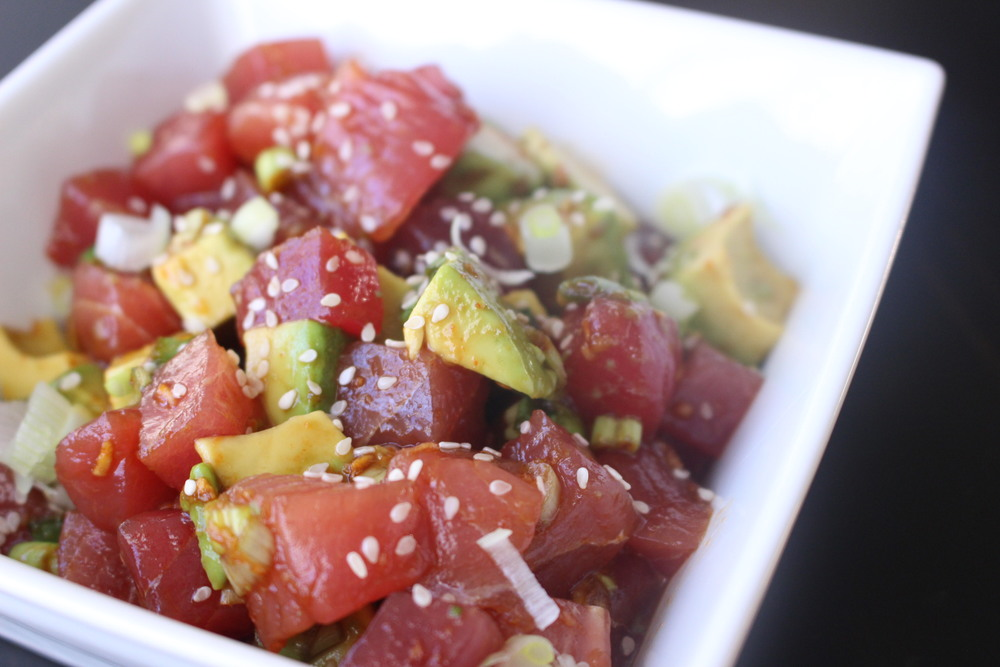

Tuna Poke Recipe

Description
Tuna poke has been a staple of my diet for years.It
always tastes so fresh and is a perfect light meal.
Ingredients
- 1 pound sashimi-grade ahi tuna
- 1-2 ripe medium avocados
- 1/3 cup soy sauce
- 1/4 cup chopped scallion
- 2 minced garlic cloves
- 2 teaspoons freshly grated ginger root
- 2 teaspoons sesame seeds
- 1 teaspoon sesame oil
- 1 teaspoon siracha
Directions
- Pat your tuna steak dry with a paper towel.
Then, place on a cutting board and using a
very sharp and large knife, cut 1-inch
sections, going against the grain. When
you've finished cutting the entire steak
going against the grain, begin cutting the
long strips in the opposite direction so
that you have 1 inch "cubes." Before you
just start cutting away, have a diagram in
your head for where you'll want to make the
cuts so that you end up with nice 1-inch
"cubes" of tuna.
- Cut open your avocado(s). Remove the seed and
then using a soup-size spoon, carefully spoon
out the avocado halves. Turn them pit side
down and with the knife, cut 1-inch wedges
going length-wise. Then, cut in the opposite
direction to make "cubes." Place the avocado
and tuna in a medium mixing bowl.
- In a small mixing bowl, whisk together the
soy sauce, grated ginger, garlic, sesame oil,
scallion, and Sriracha. Do a quick taste-test
to make sure you're happy with the heat and
saltiness. Note: Poke shouldn't be too spicy.
Sriracha isn't a standard ingredient though
many recipes call for red chili flakes. I just
like the taste of Sriracha.
- Pour the soy-ginger sauce on top of the chopped
tuna and avocado. Carefully toss so that it's
all coated in sauce. Cover and refrigerate for
20 minutes.
- Remove from fridge and sprinkle with sesame seeds.
- Serve and Enjoy! Throw on top of white rice, in
a wonton taco shell, or on a lettuce wrap. Or
just enjoy it on its own!